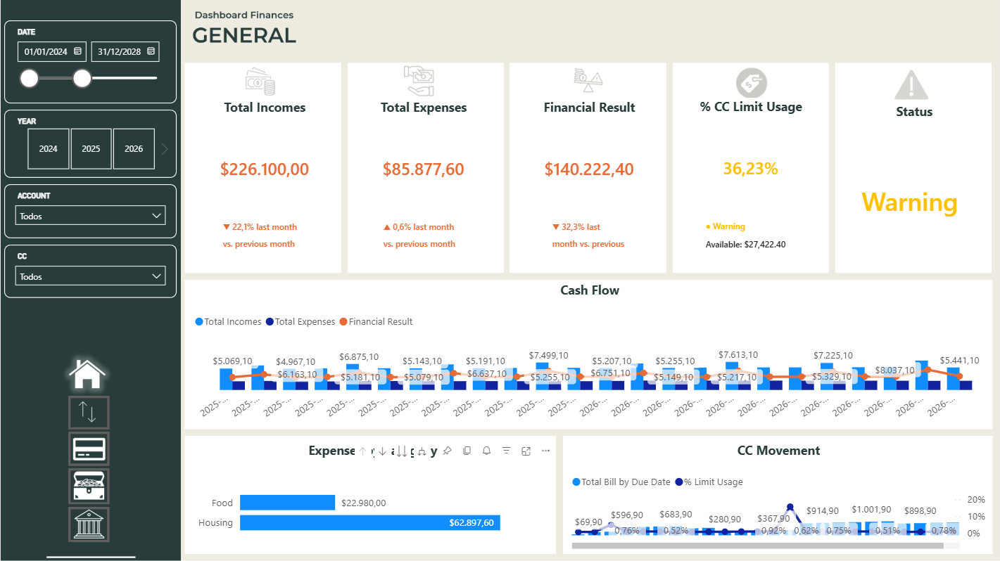

CompletedFinancial Dashboard
A financial analytics solution covering cash flow, credit cards, loans, key indicators, Portuguese and English localization, and deployment to the Power BI Service.
Power BI
DAX
Power Query
SQL
View technical project